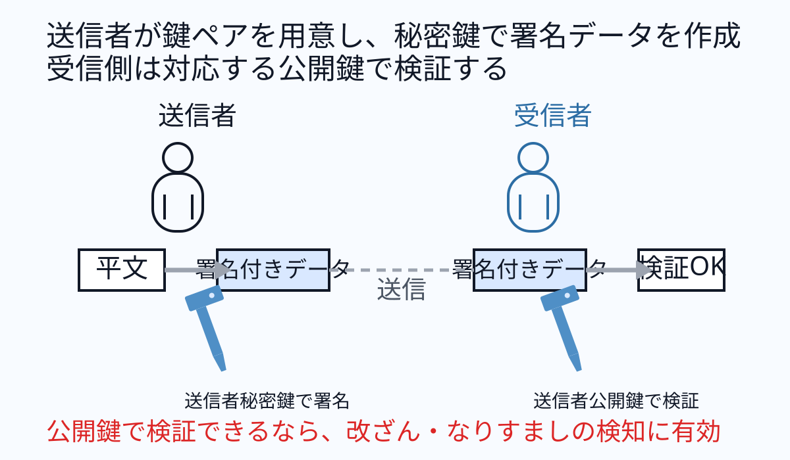
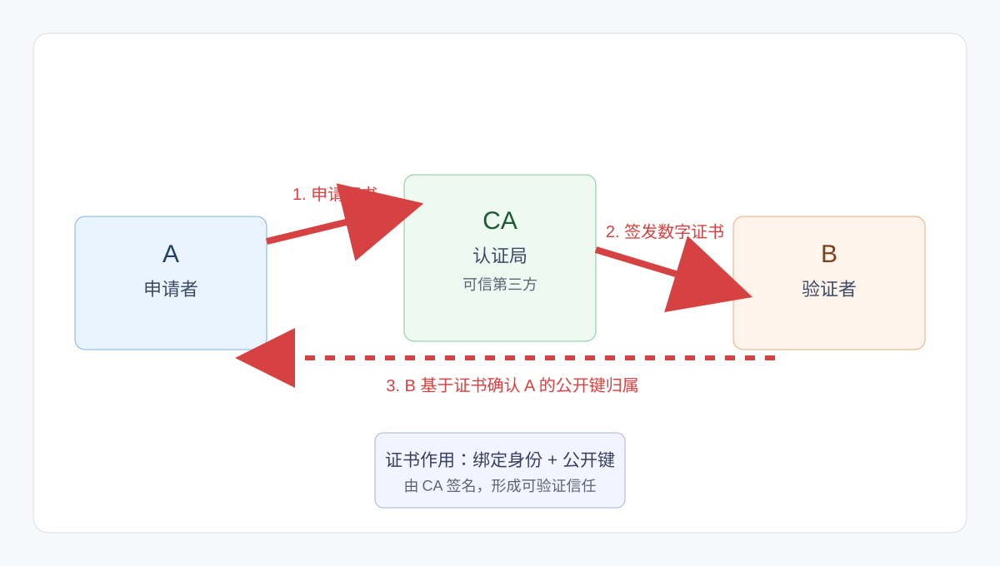
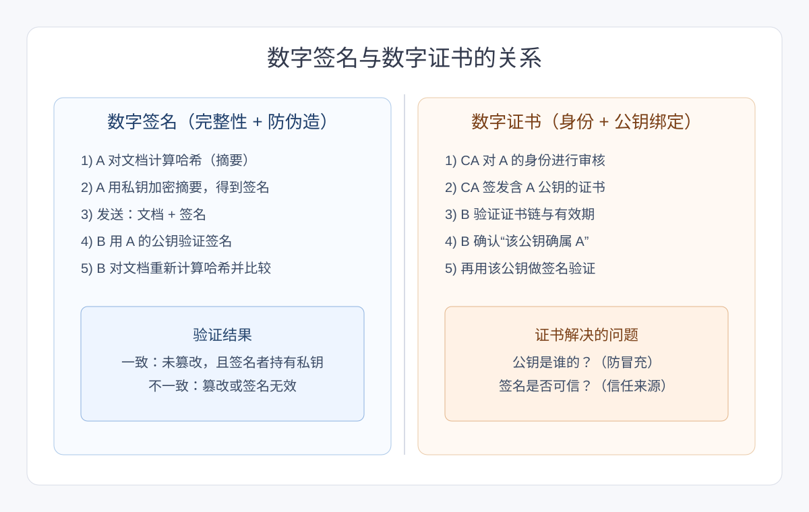

デジタル署名 / PKI
本页集中整理数字签名与 PKI 的基础知识点。
デジタル署名 / PKI 知识点
数字签名（デジタル署名）
数字签名是利用公开键密码技术来验证电子文档是否被冒用（なりすまし）或篡改（改ざん）的机制。其关键在于：签名时使用发送者的秘密键，验证时使用发送者公开键，和“保密通信时用公开键加密、秘密键复号”的方向相反。
发送者先准备一对钥匙（公开键/秘密键），并使用自己的秘密键对数据进行签名。接收者拿到数据后，用该发送者对应的公开键来验证签名。

若接收侧可用公开键成功验证，通常可判断数据确由对应秘密键持有者生成，且传输过程中未被篡改。
PKI（公开键基础设施）
PKI 通过证书机构（CA）签发数字证书，将“公开键与实体身份”绑定，建立可验证信任链。浏览器验证服务器证书、企业签名验证等都依赖 PKI。
签名键 / 验证键（署名鍵 / 検証鍵）
在数字签名中，用于“生成签名”的键（发送者秘密键）称为签名键（署名鍵）；用于“验证签名”的键（发送者公开键）称为验证键（検証鍵）。
哈希函数（ハッシュ関数）
哈希函数可将任意长度数据映射为固定长度字符串（哈希值/消息摘要）。同一输入必得同一输出，且通常难以从哈希值反推出原文，常用于完整性校验和数字签名前的摘要计算。
哈希值 / 消息摘要（メッセージダイジェスト）
哈希值是哈希函数输出的固定长度结果。把大数据转换为短摘要后可快速比较：摘要不一致可判定数据发生变化；摘要一致通常表示未被篡改（仍需考虑极低概率碰撞）。
代表性哈希函数（SHA-256 / SHA-2）
SHA-256 属于 SHA-2 家族，可从任意长度输入生成 256 bit 哈希值，当前被广泛认为安全性较高。SHA-2 是 SHA-1 的后继标准，常见输出长度包含 224 / 256 / 384 / 512 bit。
认证局（CA）
认证局（CA）是可被信赖的第三方机构，负责签发数字证书，用于证明“主体身份与公开键”的绑定关系。在 PKI 中，证书验证是否成立通常依赖对 CA 信任链的检查。
面向公众提供证书服务的 CA 常称为 Public CA；组织内部自行建设和运营的 CA 常称为 Private CA（私有 CA）。
数字证书与数字签名（同一流程理解）
可把“数字证书”和“数字签名”放在同一流程中理解：证书先解决“公钥属于谁”，签名再解决“是否本人发送、内容是否被改动”。


数字签名要与公开键加密组合使用
数字签名本身主要用于验证发送者真实性与数据完整性，不能单独实现“防窃听”的机密性保护。若要防止第三方阅读内容，应再结合公开键加密。
- 签名阶段：发送者用自己的秘密键对摘要签名，供接收者验证“是否被篡改、是否为本人发送”。
- 保密阶段：发送者用接收者公开键加密文档，接收者用自己的秘密键复号，实现机密性。
- 结论：签名负责“真实性+完整性”，公开键加密负责“机密性”。
信任锚点（Trust Anchor / トラストアンカー）
信任锚点也称信任基点或 Trust Point，是信任链中“预先被本地明确可信”的起点。系统会从该起点向下验证证书链，来判断后续实体是否可信。
- 信任链示例：A 保证 B，B 保证 C。
- 若 A 被设为可信锚点，则可沿链推导并接受 C 的可信性（在链与签名都有效前提下）。
- 在 PKI 中，通常“根证书（Root Certificate）”就是信任锚点。
根证书（Root Certificate）
在 PKI 中，根证书是由根认证局签发的自签名数字证书，属于信任链最上层的“信任基点（Trust Anchor）”。终端或浏览器通常预置并信任根证书，用于后续证书链验证。
- 根证书通常存放在操作系统或浏览器的信任库中。
- 验证服务器证书时，会沿链回溯到受信任根证书，确认链上签名关系与有效性。
中间 CA 证书（Intermediate CA Certificate）
中间 CA 证书用于连接“根 CA”与“终端实体证书”（如服务器证书），由上级 CA 签发，用来证明下级发证机构的正当性，从而构成可验证的证书链（认证树）。
- 典型链路：根证书 -> 中间 CA 证书 -> 服务器/客户端证书。
- 引入中间 CA 可隔离根私钥使用风险，便于分级管理与吊销控制。
服务器证书（Server Certificate）
服务器证书是服务器向可信 CA 申请并获得的证书，用于证明服务器身份的正当性。证书中通常包含服务器公开键、域名（CN/SAN）、有效期，以及 CA 的数字签名。
- 客户端在 TLS/HTTPS 握手中验证服务器证书链、域名匹配与有效期。
- 若启用双向 TLS（mTLS），客户端也会出示客户端证书实现相互认证。
- 结论：服务器证书是 HTTPS 信任建立与防冒充的核心组件。
客户端证书（Client Certificate）
客户端证书用于客户端向服务器证明自身身份，常见于双向 TLS（mTLS）场景。它通常由可信 CA 签发，并与客户端私钥成对使用，以实现更强的访问控制与身份确认。
- 在相互认证中，服务器会请求并验证客户端证书的签发链、有效期和状态。
- 证书可部署在 PC、手机或受管终端的证书存储区，由浏览器或应用在握手时提交。
- 验证通过才允许访问受保护资源，可显著降低账号口令被盗后的冒用风险。
服务器与客户端的相互认证（mTLS）
在双向 TLS（mTLS）中，通信双方都会出示并验证证书：客户端先验证服务器证书，服务器再验证客户端证书，从而实现“双向身份确认”。
- 服务器证书与客户端证书通常都由组织侧（服务提供方）统一向 CA 申请并发放管理。
- 握手期间，双方都要检查证书链、有效期、用途和吊销状态，任一失败都应拒绝连接。
- 相较单向 TLS，mTLS 额外确认“客户端是谁”，适合内网系统、API 网关和高敏感业务。
CRL（证书吊销列表）
CRL（Certificate Revocation List）是 CA 发布的“已吊销证书清单”。其中列出虽未到期但因密钥泄露、主体变更或误发等原因被提前判定无效的证书序列号。
- 证书验证时除检查链、有效期外，还需检查是否出现在 CRL 中。
- 若命中吊销记录，应视为证书失效并拒绝信任该证书。
- CRL 是离线批量发布机制，常与 OCSP 等在线状态查询方式配合使用。